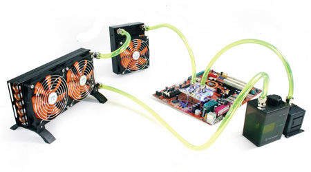
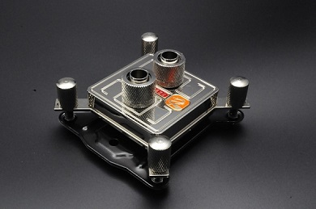
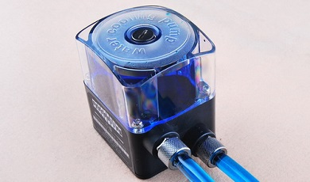
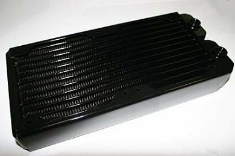
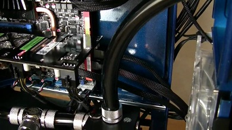
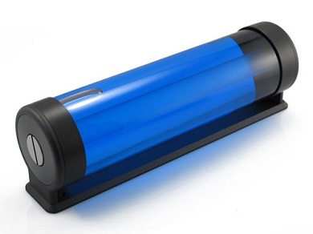
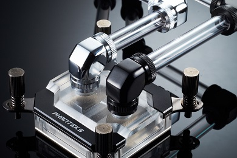
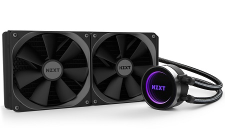

2 types of Water Cooling
Generic Water Cooling

This is the regular Water Cooling that most people use. They can be bought by parts or for a whole kit that contains everything a user needs.
A typical Water Cooling is consists of the following:
Water Blocks
The bare metal that touches the PC component that needs cooling.
Pump
It is responsible for the circulation of the water loop.
Radiator
The receiver and releaser of heat gathered by the water.
Tubing
The medium that allows water circulation.
Reservoir
The water "tank" where water is being filled.
Fittings
Secure leakage between water pipes and water blocks.
AIO Water Cooling (All in One)

AIO water cooling are pre-built coolers. It does the same job as a regular water cooling loop but with lesser maintenance. Popular among Gamers because not all of them really like to risk their system of being damage.
Popular AIO brands are: